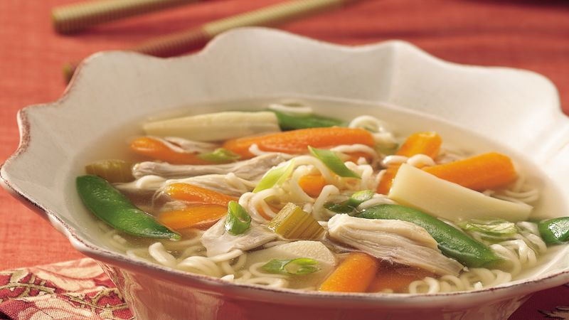

Slow-Cooker Chicken and Ramen Noodle Soup

Description
Turn ramen noodle soup mix into an easy complete meal with chicken and vegetables, and sliced water chestnuts adding an Asian crunch.
Ingredients
- 1 1/4 lb. (about 6) boneless skinless chicken thighs
- 1 (16-oz.) pkg. fresh baby carrots, cut in half lengthwise
- 1 medium stalk celery, chopped (about 1/2 cup)
- 1 (8-oz.) can sliced bamboo shoots, drained
- 1 (8-oz.) can sliced water chestnuts, drained
- 1 (3-oz.) pkg. oriental-flavor ramen noodle soup mix
- 1 (32-oz.) container chicken broth
- 1 cup frozen sugar snap peas, thawed
- 2 green onions, sliced
Steps
-
In 3 1/2 or 4-quart slow cooker, layer chicken thighs, carrots, celery, bamboo shoots, water chestnuts and contents of seasoning packet from soup mix. Pour broth over top.
-
Cover; cook on Low setting for 7 to 8 hours.
-
About 10 minutes before serving, remove chicken from slow cooker; place on large plate. Shred chicken with 2 forks; return to slow cooker and mix well. Coarsely break noodles from soup mix into soup. Stir in thawed sugar snap peas. Cover; cook an additional 10 minutes or until noodles are tender.
-
Just before serving, stir in onions. If desired, add salt and pepper to taste.